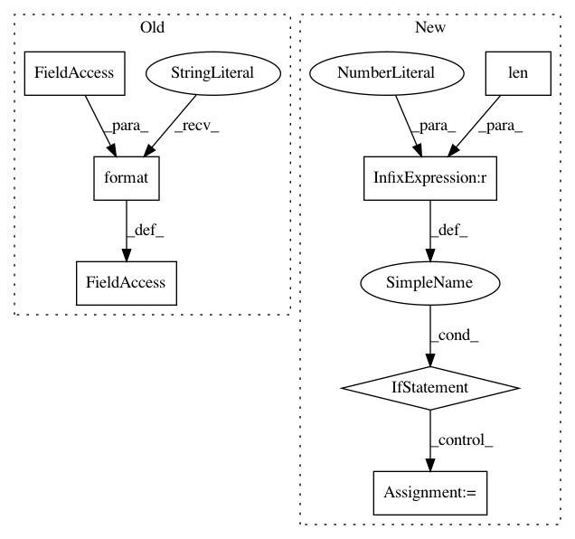

63b0e2bc13c60c5b04f0de51d491a8e1ac6a1ac7,Tars/losses/elbo.py,ELBO,__init__,#ELBO#Any#Any#Any#,8
Before Change
super().__init__(approximate_dist, input_var=input_var)
self.p = p
self.q = approximate_dist
self.loss_text = "E_{}[log {}/{}]".format(self.q.prob_text,
self.p.prob_text,
self.q.prob_text)
def estimate(self, x, **kwargs):
_x = super().estimate(x)
samples = self.q.sample(_x, reparam=True)
After Change
The evidence lower bound
def __init__(self, p, approximate_dist, input_var=[]):
if len(input_var) == 0:
input_var = approximate_dist.cond_var // TODO: fix to input_var
super().__init__(p, approximate_dist, input_var=input_var)
@property
def loss_text(self):
In pattern: SUPERPATTERN
Frequency: 4
Non-data size: 7
Instances
Project Name: masa-su/pixyz
Commit Name: 63b0e2bc13c60c5b04f0de51d491a8e1ac6a1ac7
Time: 2018-10-27
Author: masa@weblab.t.u-tokyo.ac.jp
File Name: Tars/losses/elbo.py
Class Name: ELBO
Method Name: __init__
Project Name: keras-team/keras
Commit Name: 023331ec2a7b0086abfc81eca16c84a1692ee653
Time: 2017-02-09
Author: francois.chollet@gmail.com
File Name: keras/layers/convolutional.py
Class Name: Convolution1D
Method Name: build
Project Name: masa-su/pixyz
Commit Name: 63b0e2bc13c60c5b04f0de51d491a8e1ac6a1ac7
Time: 2018-10-27
Author: masa@weblab.t.u-tokyo.ac.jp
File Name: Tars/losses/reconstructions.py
Class Name: StochasticReconstructionLoss
Method Name: __init__
Project Name: keras-team/keras
Commit Name: 023331ec2a7b0086abfc81eca16c84a1692ee653
Time: 2017-02-09
Author: francois.chollet@gmail.com
File Name: keras/layers/convolutional.py
Class Name: Convolution2D
Method Name: build